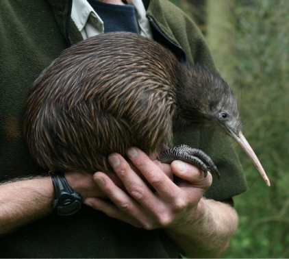

Kiwi camera
Kiwi

Flightless birds endemic to New Zealand. Approximately the size of
a domestic chicken, kiwi are by far the smallest living ratites. The kiwi is recognised as an icon of New Zealand, and the association is so
strong that the term Kiwi is used internationally as the colloquial demonym for New Zealanders.
Diet:
small invertebrates, seeds, grubs, and many varieties of worms
Range:
New Zealand [VIEW MAP]
Habitat:
they prefer subtropical and temperate podocarp and beech forests, as sub-alpine scrub,
tussock grassland, and the mountains
General Information:
Their adaptation to a terrestrial life is extensive: like all the other ratites
(ostrich, emu, rhea and cassowary), they have no keel on the sternum to anchor wing muscles.
The vestigial wings are so small that they are invisible under the bristly, hair-like, two-branched
feathers. While most adult birds have bones with hollow insides to minimise weight and make
flight practicable, kiwi have marrow, like mammals and the young of other birds. With no constraints
on weight due to flight requirements, brown kiwi females carry and lay a single egg that may weigh as
much as 450 g (16 oz). Like most other ratites, they have no uropygial gland (preen gland). Their bill
is long, pliable and sensitive to touch, and their eyes have a reduced pecten. Their feathers lack barbules
and aftershafts, and they have large vibrissae around the gape. They have 13 flight feathers, no tail and
a small pygostyle. Their gizzard is weak and their caecum is long and narrow.
Once bonded, a male and female kiwi tend to live their entire lives as a monogamous
couple. During the mating season, June to March, the pair call to each other at night, and meet in
the nesting burrow every three days. These relationships may last for up to 20 years. They are
unusual among other birds in that, along with some raptors, they have a functioning pair of ovaries.
(In most birds and in platypuses, the right ovary never matures, so that only the left is functional.
Physical features and characteristics:
The eye of the kiwi is the smallest relative to body mass in all avian species resulting
in the smallest visual field as well. The eye has small specialisations for a nocturnal lifestyle,
but kiwi rely more heavily on their other senses (auditory, olfactory, and somatosensory system).
The sight of the kiwi is so underdeveloped that blind specimens have been observed in nature,
showing how little they rely on sight for survival and foraging. In an experiment, it was
observed that one-third of a population of A. rowi in New Zealand under no environmental stress
had ocular lesions in one or both eyes. The same experiment examined three specific specimens
that showed complete blindness and found them to be in good physical standing outside of ocular
abnormalities. A 2018 study revealed that the kiwi's closest relatives, the extinct elephant
birds, also shared this trait despite their great size.
Unlike virtually every other palaeognath, which are generally small-brained by bird
standards, kiwi have proportionally large encephalisation quotients. Hemisphere proportions are
even similar to those of parrots and songbirds, though there is no evidence of similarly complex
behaviour.
Kiwi have a highly developed sense of smell, unusual in a bird, and are the only
birds with nostrils at the end of their long beaks.
The kiwi's egg is one of the largest in proportion to body size (up to 20% of the
female's weight) of any species of bird in the world.
Habitat:
The kiwi's mostly nocturnal habits may be a result of habitat intrusion by predators,
including humans. In areas of New Zealand where introduced predators have been removed, such as
sanctuaries, kiwi are often seen in daylight. They prefer subtropical and temperate podocarp and
beech forests, but they are being forced to adapt to different habitat, such as sub-alpine scrub,
tussock grassland, and the mountains.
Diet:
Kiwi eat small invertebrates, seeds, grubs, and many varieties of worms.
They also may eat fruit, small crayfish, eels and amphibians. Because their nostrils are
located at the end of their long beaks, kiwi can locate insects and worms underground using
their keen sense of smell, without actually seeing or feeling them.[26] This sense of smell
is due to a highly developed olfactory chamber and surrounding regions. It is a common belief
that the kiwi relies solely on its sense of smell to catch prey but this has not been scientifically
observed. Lab experiments have suggested that A. australis can rely on olfaction alone but is not
consistent under natural conditions. Instead, the kiwi may rely on auditory and/or vibrotactile cues.